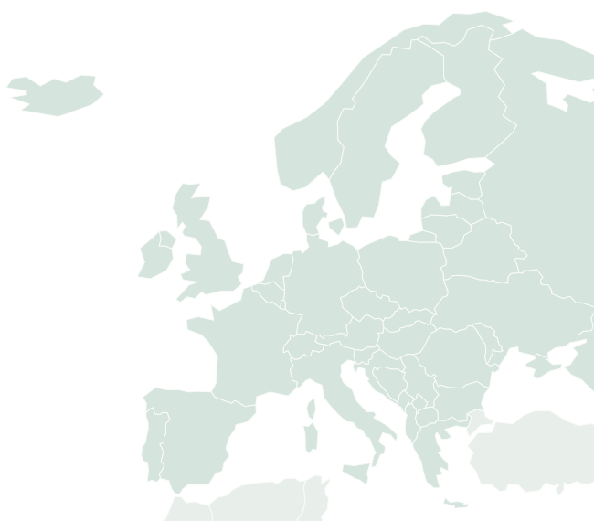

01 · Finden und einordnen
Finde deinen Beteiligungsweg.
Wo möchtest du etwas bewegen? Erkunde Beispiele nach Ort, Thema und politischer Ebene. Prüfe dann, was du beitragen kannst und welche Rückmeldung vorgesehen ist.
Interaktive Lerndemonstration: 8 erfundene Fälle an 7 realen Orten. Alle Fallzahlen, Statusangaben und Verfahren sind Beispieldaten. Sie sind keine aktuell offenen Beteiligungsangebote.
Nach Ort
Wähle einen Kartenpunkt oder einen Ort darunter. Beide Wege setzen denselben Filter.

Zahlen zeigen passende Übungsfälle nach Thema, Ebene, Status und Suche. Die Karte zeigt ausgewählte Orte, keine vollständige Abdeckung und keine Teilnahmeberechtigung.
Nach Thema
Was beschäftigt dich?
Politische Ebene
Deine Treffer
Reale Beteiligungswege erkunden
Diese offiziellen Portale sind externe Einstiege. Prüfe dort die aktuellen Verfahren, Fristen und Teilnahmebedingungen. Ihre Inhalte werden hier nicht automatisch eingelesen.
Quellenstand: 25.10.2026. Keine Partnerschaft oder vollständige Angebotsübersicht.